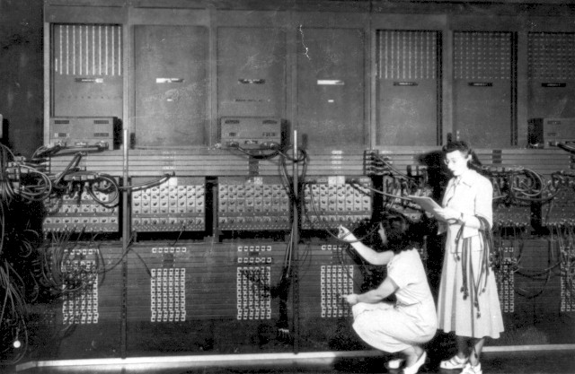

Mas oque é programação?
Bom, segundo o Google, programação pode ser definida como um processo de escrita, testes e manutenção de programas de computadores, que por sua vez estão interligados em uma rede maior de instruções de códigos, que são criadas usando Linguagens de programação
Segundo a fonte, linguagens de programação são um método padronizado de comunicar instruções específicas para um computador. Há centenas de variações e todas elas permitem que o programador defina sobre quais dados o computador deverá atuar, como armazenar e transmitir esses dados e quais ações tomar sob variadas circunstâncias.
Se os computadores evoluíram disso:
 para isso:
é de se esperar que a programação também tenha avançado bastante,
e ela avançou, e muito.
Você pode ver a evolução da programação pelo passar do tempo de forma detalhada clicando aqui
Com isso, as profissões das áreas voltadas para a tecnologia, se mostram cada vez mais influentes no mercado, visto que são essencias para o mundo tecnologico moderno.
E lembre-se um bom café é sempre bom (tirando a parte do vício em cafeína e todos os prejuízos dele)
para deixar seu cérebro ativo, e para programar.